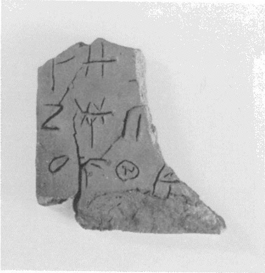
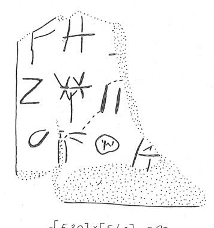

-
KH21
Names
KH21, KH 21
Support
Tablet
Location
Khania
Findspot
Unavailable


Scribe
Unavailable
Context
Late Minoan IB
1500-1450 BCE
Dimensions
[5.40]
[5.30]
0.90
cm
GORILA OCR
Catalogue
Readings
1 1 0 CYP doubtful
1 1 1 W certain
2 2 2 ¹⁄₅ certain
2 3 3 NI certain
2 3 4 2 certain
3 4 5 *306 certain
3 4 5 QE doubtful
3 4 5 DU doubtful
𐙗𐝍
𐝂𐘝𐄈
𐙚𐘿𐘬
CYPW
¹⁄₅NI2
*306QEDU
𐙗𐝍
𐝂
𐘝𐄈
𐙚𐘿𐘬
CYPW
¹⁄₅
NI2
*306QEDU
KH 21
,
page tablet (KH MUS.) (GORILA III: 54-55) (LM IB context)
Schoep 2002, type Ia (mixed
commodities)
|
side.line
|
statement
|
logogram
|
number
|
fraction
|
|
|
supra mutila
|
|
|
|
|
.1
|
|
]
*303
|
|
W
|
|
.2
|
|
|
|
]D
|
|
.2
|
|
FIC
|
2[
|
|
|
.3
|
*306-
QE
-
DU
[
|
|
|
|
.3: after #306 there are 2 signs:
GORILA interprets sign 1 as
100
and comments that
there are "indeterminate marks in the interior of the circle"; the
sign resembles Hieroglyphic CHIC *074/*075 (
 ,
,
 ), which can be demonstrated to represent
a group of whatever the number is inscribed in the circle, in this
case perhaps 20 or 30. GORILA gives no interpretation of the second
sign
), which can be demonstrated to represent
a group of whatever the number is inscribed in the circle, in this
case perhaps 20 or 30. GORILA gives no interpretation of the second
sign
Commentary © John Younger
References
papers/GORILA-Vol3.pdf#page=78